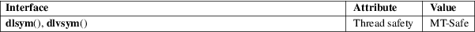

dlsym, dlvsym − obtain address of a symbol in a shared object or executable
Dynamic linking library (libdl, −ldl)
#include <dlfcn.h>
void *dlsym(void *restrict handle, const char *restrict symbol);
#define
_GNU_SOURCE
#include <dlfcn.h>
void
*dlvsym(void *restrict handle, const char
*restrict symbol,
const char *restrict version);
The function dlsym() takes a "handle" of a dynamic loaded shared object returned by dlopen(3) along with a null-terminated symbol name, and returns the address where that symbol is loaded into memory. If the symbol is not found, in the specified object or any of the shared objects that were automatically loaded by dlopen(3) when that object was loaded, dlsym() returns NULL. (The search performed by dlsym() is breadth first through the dependency tree of these shared objects.)
In unusual cases (see NOTES) the value of the symbol could actually be NULL. Therefore, a NULL return from dlsym() need not indicate an error. The correct way to distinguish an error from a symbol whose value is NULL is to call dlerror(3) to clear any old error conditions, then call dlsym(), and then call dlerror(3) again, saving its return value into a variable, and check whether this saved value is not NULL.
There are two
special pseudo-handles that may be specified in
handle:
RTLD_DEFAULT
Find the first occurrence of the desired symbol using the default shared object search order. The search will include global symbols in the executable and its dependencies, as well as symbols in shared objects that were dynamically loaded with the RTLD_GLOBAL flag.
RTLD_NEXT
Find the next occurrence of the desired symbol in the search order after the current object. This allows one to provide a wrapper around a function in another shared object, so that, for example, the definition of a function in a preloaded shared object (see LD_PRELOAD in ld.so(8)) can find and invoke the "real" function provided in another shared object (or for that matter, the "next" definition of the function in cases where there are multiple layers of preloading).
The _GNU_SOURCE feature test macro must be defined in order to obtain the definitions of RTLD_DEFAULT and RTLD_NEXT from <dlfcn.h>.
The function dlvsym() does the same as dlsym() but takes a version string as an additional argument.
On success, these functions return the address associated with symbol. On failure, they return NULL; the cause of the error can be diagnosed using dlerror(3).
For an explanation of the terms used in this section, see attributes(7).

dlsym()
POSIX.1-2008.
dlvsym()
GNU.
dlsym()
glibc 2.0. POSIX.1-2001.
dlvsym()
glibc 2.1.
There are several scenarios when the address of a global symbol is NULL. For example, a symbol can be placed at zero address by the linker, via a linker script or with −−defsym command-line option. Undefined weak symbols also have NULL value. Finally, the symbol value may be the result of a GNU indirect function (IFUNC) resolver function that returns NULL as the resolved value. In the latter case, dlsym() also returns NULL without error. However, in the former two cases, the behavior of GNU dynamic linker is inconsistent: relocation processing succeeds and the symbol can be observed to have NULL value, but dlsym() fails and dlerror() indicates a lookup error.
History
The dlsym() function is part of the dlopen API,
derived from SunOS. That system does not have
dlvsym().
See dlopen(3).
dl_iterate_phdr(3), dladdr(3), dlerror(3), dlinfo(3), dlopen(3), ld.so(8)